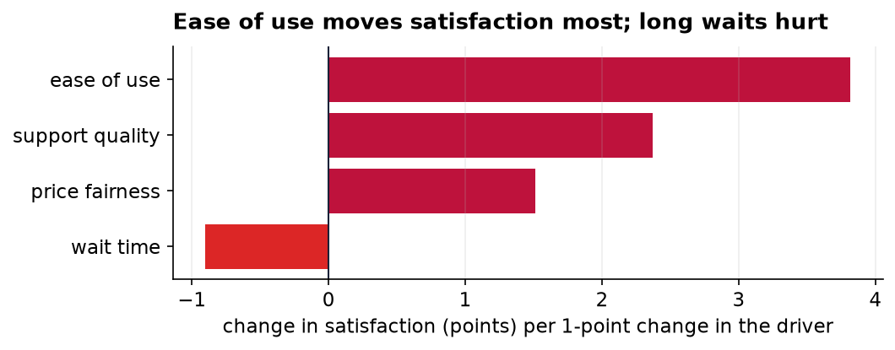
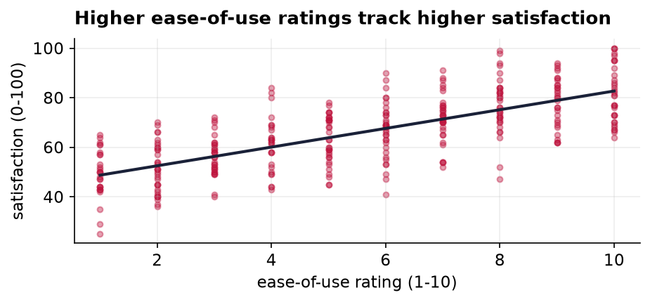

What Drives Customer Satisfaction?
An analytical report: which drivers matter most, and how confident we are.
In one paragraph
We asked 320 customers to rate their overall satisfaction and four things that might shape it: how easy our product is to use, the quality of our support, whether our pricing feels fair, and how long they wait. Together those four factors explain the large majority of why some customers are happier than others. The single biggest lever, by a clear margin, is ease of use. Support quality is second. Waiting is the only factor that pushes satisfaction down. If we can invest in one thing, it should be making the product easier to use.
How to read what follows
The method here is a regression, which is just a disciplined way of asking: holding everything else equal, how much does each factor move satisfaction on its own? The answer for each factor is a single number, its effect on a 0-to-100 satisfaction score for each one-point improvement in that factor's 1-to-10 rating. Bigger number, bigger lever. The chart below lays them out.

Ease of use is the standout: each one-point gain in how easy customers find the product is worth about 3.8 points of satisfaction, more than a point and a half ahead of the next factor. Support quality follows at about 2.4 points, and price fairness contributes a smaller but real 1.5. Wait time is the mirror image, each extra point of waiting costs roughly a point of satisfaction, which is a useful reminder that reducing friction counts just as much as adding polish.
A closer look at the biggest lever
Because ease of use matters most, it is worth seeing it directly. Each dot below is one customer; the upward slope of the line through them shows the pattern plainly: customers who find the product easier to use report higher satisfaction, steadily and without exception in the aggregate.

Taken together, the four factors account for about 84 percent of the variation in satisfaction (a strong result for survey data), which tells us we are measuring the things that actually matter to customers rather than missing some hidden driver.
What this can and cannot support
Two honest limits. First, this is survey data, so what we have found are strong associations, not proven cause and effect; it is possible that a generally happy customer rates everything highly, inflating these links. Second, the ratings are self-reported and come from a single point in time, so they cannot tell us how these relationships might shift as the product or the customer base changes. Neither limit undercuts the headline, ease of use is where the leverage is, but both argue for treating the exact numbers as a guide rather than a guarantee, and for confirming the effect with a real improvement we can measure.